Neste post, vamos explorar como a inteligência artificial está revolucionando o desenvolvimento frontend design ai, utilizando o Claude 3.7. Vamos criar uma interface de máquina arcade dos anos 80 do zero, mostrando como essa nova ferramenta pode transformar seu fluxo de trabalho de codificação.
Índice
- Passo 1: Introdução ao Claude 3.7 🎉
- Passo 2: Preparando o Ambiente de Desenvolvimento 🛠️
- Passo 3: Explorando as Novas Funcionalidades do Cursor 🚀
- Passo 4: Iniciando o Projeto da Máquina Arcade 🎮
- Passo 5: Criando uma Lista de Tarefas para o Projeto ✅
- Passo 6: Configurando o Estilo da Interface 🎨
- Passo 7: Adicionando Componentes ao Projeto 🛠️
- Passo 8: Integrando o Storybook ao Fluxo de Trabalho 📚
- Passo 9: Testando a Funcionalidade da Máquina Arcade 🎮
- Passo 10: Finalizando o Projeto e Resolvendo Erros ⚙️
- Passo 11: Considerações Finais sobre o Claude 3.7 🧠
- FAQ: Perguntas Frequentes sobre Inteligência Artificial e Desenvolvimento Frontend ❓
Passo 1: Introdução ao Claude 3.7 🎉
O Claude 3.7 chegou e está revolucionando a forma como trabalhamos com inteligência artificial no desenvolvimento frontend design ai. Esta versão traz melhorias significativas, focando na execução de tarefas complexas de codificação de forma mais eficiente. O que era bom agora é ainda melhor!
A nova versão é especialmente interessante para quem trabalha com código real. Você pode esperar um desempenho melhorado na manipulação de bases de código complexas. É um divisor de águas para desenvolvedores que buscam otimizar seu fluxo de trabalho.
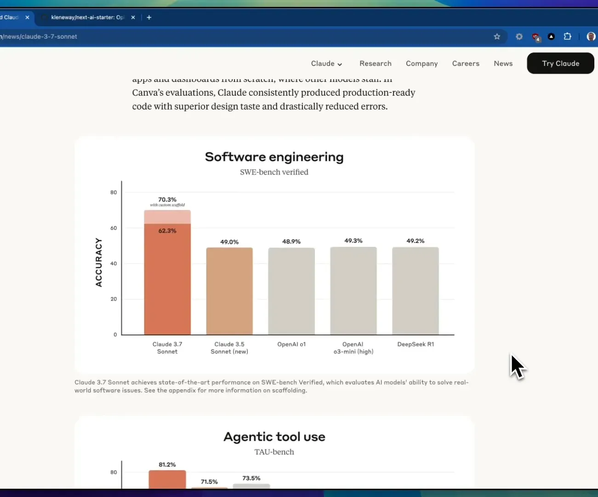
Passo 2: Preparando o Ambiente de Desenvolvimento 🛠️
Antes de começarmos, é essencial preparar o ambiente de desenvolvimento. Certifique-se de que você tenha as ferramentas necessárias instaladas. Clone o repositório inicial e instale todas as dependências.
Utilizar o Cursor é fundamental, pois ele irá integrar as capacidades do Claude 3.7 no seu fluxo de trabalho. Assim que tudo estiver instalado, você estará pronto para explorar as novas funcionalidades!
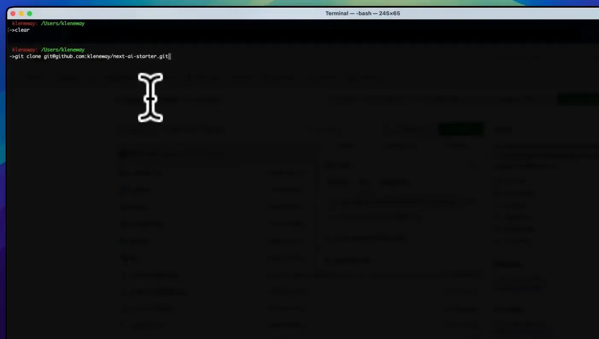
Passo 3: Explorando as Novas Funcionalidades do Cursor 🚀
Uma das adições mais emocionantes do Cursor é a combinação do modo de chat e do modo agente. Isso significa que você pode alternar facilmente entre as duas funcionalidades, aumentando assim a eficiência na codificação.
Além disso, o Cursor agora incorpora modelos de raciocínio e pensamento, permitindo que você execute tarefas de forma mais intuitiva e rápida. Teste essas novas funcionalidades e veja como elas podem melhorar seu processo de desenvolvimento.
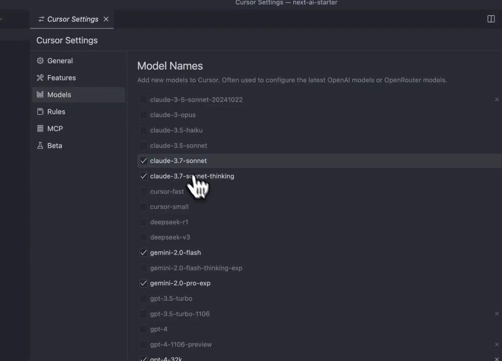
Passo 4: Iniciando o Projeto da Máquina Arcade 🎮
Vamos iniciar um projeto incrível: a criação de uma máquina arcade dos anos 80! Este projeto não só é nostálgico, mas também uma excelente maneira de aplicar as habilidades que você está adquirindo com o Claude 3.7.
Defina os jogos que deseja incluir e utilize a abordagem de design atômico para construir os componentes necessários. A estrutura do projeto deve ser clara e organizada, facilitando o acesso ao código e à interface.
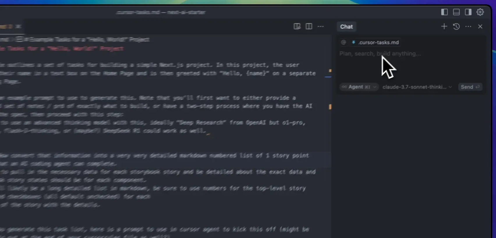
Passo 5: Criando uma Lista de Tarefas para o Projeto ✅
Uma das chaves para o sucesso no desenvolvimento é ter uma lista clara de tarefas. Use a funcionalidade do Cursor para criar uma checklist em formato Markdown. Isso ajudará a manter o controle do que precisa ser feito.
Divida o projeto em histórias menores, cada uma representando uma tarefa de um ponto de história. Isso não só tornará o projeto mais gerenciável, mas também permitirá que você veja o progresso à medida que avança.
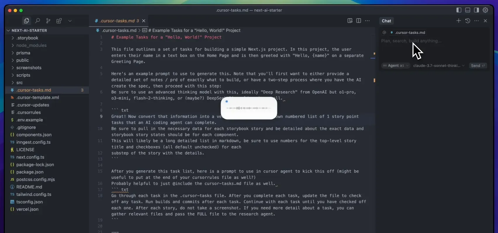
Passo 6: Configurando o Estilo da Interface 🎨
Agora que temos a estrutura do projeto e a lista de tarefas, é hora de configurar o estilo da interface. Aqui, você pode usar o Tailwind CSS para aplicar um visual autêntico de arcade dos anos 80.
Experimente diferentes combinações de cores e fontes que capturem a essência dos jogos da época. A personalização do estilo não só tornará o projeto mais atraente, mas também proporcionará uma experiência de usuário incrível.
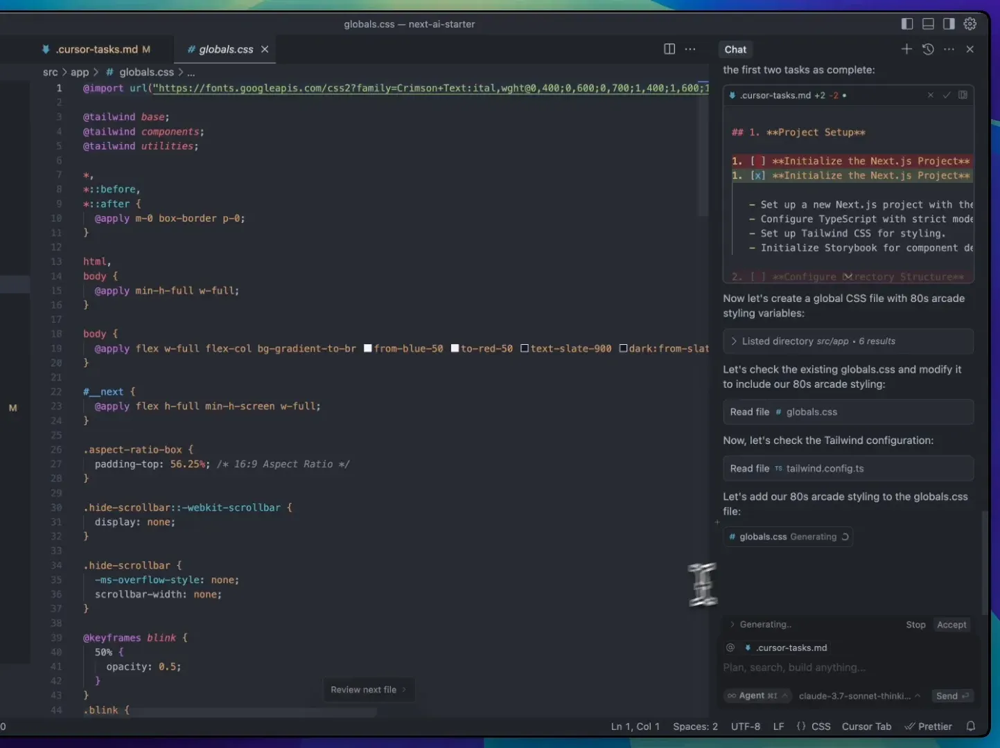
Passo 7: Adicionando Componentes ao Projeto 🛠️
Agora que temos nossa estrutura básica e o estilo da interface configurado, é hora de adicionar componentes ao nosso projeto. Vamos criar componentes reutilizáveis que formam a base da nossa máquina arcade.
Comece definindo a estrutura dos componentes. Pense em elementos como botões, controles e displays. Cada um deles deve ser projetado com a ideia de reutilização em mente, seguindo os princípios do design atômico.
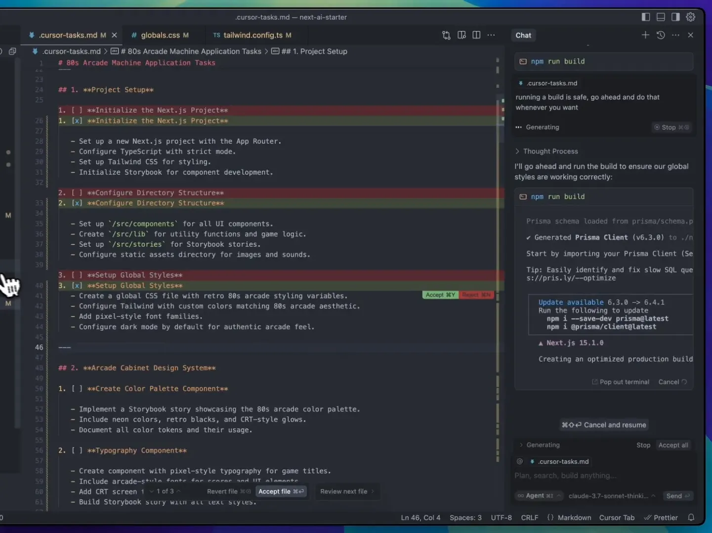
Componentes a serem criados:
- Botão de início
- Controles de joystick
- Display de pontuação LED
- Slot de moeda
Utilize o Storybook para visualizar e testar cada componente conforme você os cria. Isso ajudará a garantir que eles funcionem corretamente antes de integrá-los ao projeto principal.
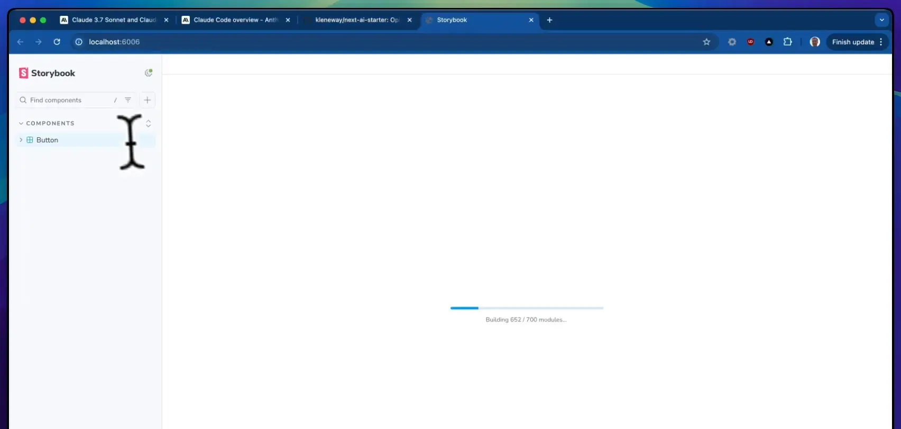
Passo 8: Integrando o Storybook ao Fluxo de Trabalho 📚
O Storybook é uma ferramenta poderosa para o desenvolvimento de componentes de interface. Ele permite que você desenvolva e teste componentes de forma isolada, o que é ideal para manter a qualidade do seu código.
Para integrar o Storybook ao seu fluxo de trabalho, siga estes passos:
- Inicie o Storybook no seu projeto.
- Crie histórias para cada um dos componentes que você desenvolveu.
- Teste a aparência e a funcionalidade de cada componente diretamente no Storybook.
Essa prática não apenas melhora a qualidade do código, mas também facilita a colaboração com outros desenvolvedores e designers.
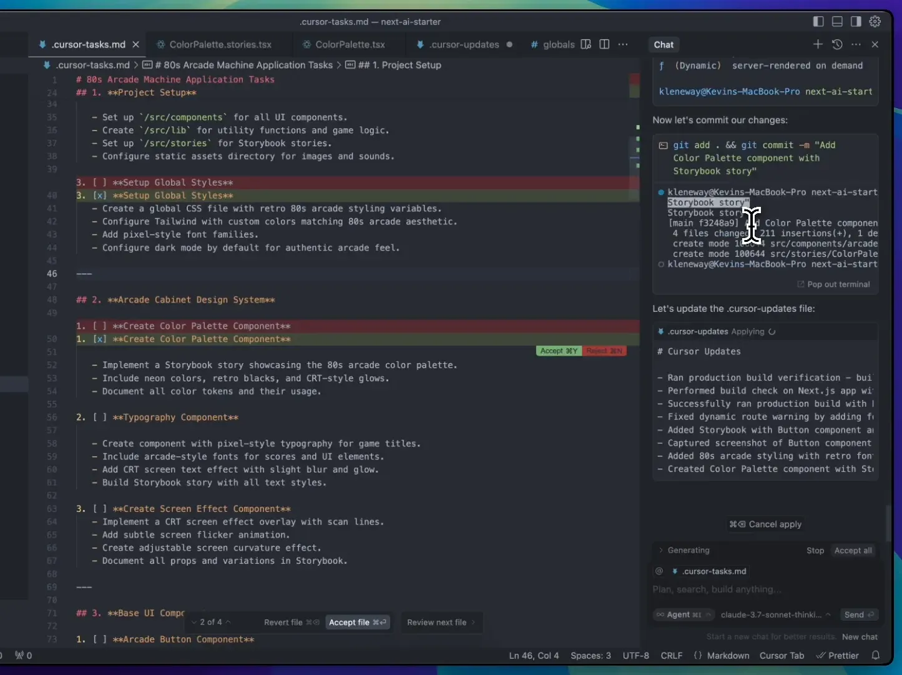
Passo 9: Testando a Funcionalidade da Máquina Arcade 🎮
Com todos os componentes em funcionamento, é hora de testar a funcionalidade da máquina arcade. Isso envolve verificar se todos os botões e controles funcionam como esperado.
Faça uma lista de verificação para garantir que cada parte da máquina arcade esteja funcionando:
- Verifique se o botão de início inicia o jogo corretamente.
- Teste os controles do joystick para garantir que eles respondem de forma precisa.
- Confirme que o display de pontuação atualiza corretamente durante o jogo.
- Assegure-se de que o slot de moeda aceita entradas corretamente.
Esses testes são cruciais para garantir que sua máquina arcade funcione de maneira fluida e divertida.
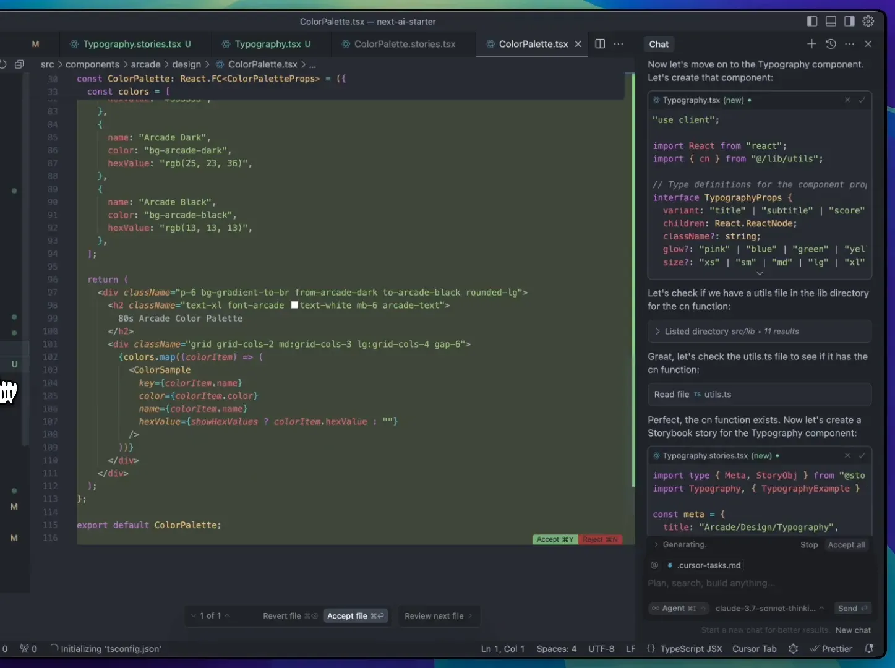
Passo 10: Finalizando o Projeto e Resolvendo Erros ⚙️
Após testar todas as funcionalidades, é hora de finalizar o projeto. Isso envolve refinamentos e a correção de quaisquer erros que possam ter surgido durante o desenvolvimento.
Recomendo fazer uma revisão completa do código, buscando por:
- Erros de lógica
- Problemas de estilo
- Componentes que não estão funcionando como deveriam
Documente quaisquer mudanças que você fizer e não se esqueça de atualizar o Storybook com as versões finais dos componentes.
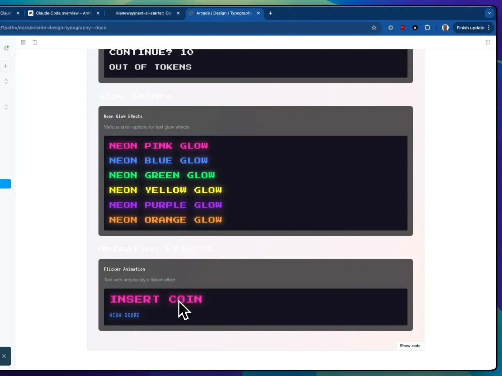
Passo 11: Considerações Finais sobre o Claude 3.7 🧠
O Claude 3.7, como ferramenta de inteligência artificial, trouxe uma nova dimensão ao desenvolvimento frontend design ai. Ele não apenas automatiza tarefas, mas também melhora a qualidade do código através de práticas recomendadas e design atômico.
Com a capacidade de entender e gerar código de maneira tão eficiente, a AI se tornou uma aliada poderosa para desenvolvedores. Ao integrar ferramentas como o Storybook e seguir práticas de teste rigorosas, você pode criar aplicações robustas e escaláveis.
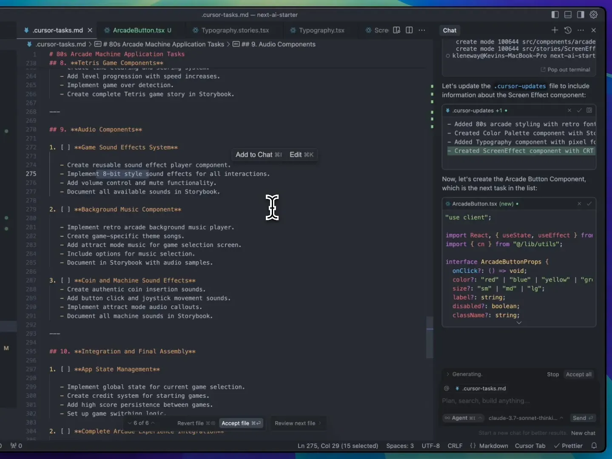
FAQ: Perguntas Frequentes sobre Inteligência Artificial e Desenvolvimento Frontend ❓
1. O que é inteligência artificial no desenvolvimento frontend?
A inteligência artificial no desenvolvimento frontend refere-se ao uso de algoritmos e modelos de aprendizado de máquina para automatizar tarefas de codificação, melhorar a qualidade do código e facilitar o design de interfaces.
2. Como o Claude 3.7 pode ajudar no meu fluxo de trabalho?
O Claude 3.7 pode auxiliar na automação de tarefas repetitivas, oferecer sugestões de código e ajudar a identificar e corrigir erros, permitindo que você se concentre em tarefas mais criativas e complexas.
3. É necessário ter conhecimentos avançados em programação para usar ferramentas de AI?
Embora um conhecimento básico de programação seja útil, muitas ferramentas de AI são projetadas para serem acessíveis a desenvolvedores de todos os níveis. A prática e a exploração dessas ferramentas podem ajudá-lo a se familiarizar rapidamente.
4. Como posso me manter atualizado sobre as novas tecnologias de AI no desenvolvimento?
Participar de comunidades online, seguir blogs e canais de YouTube relacionados, e fazer cursos sobre inteligência artificial e desenvolvimento de software são ótimas maneiras de se manter informado sobre as últimas tendências e ferramentas.
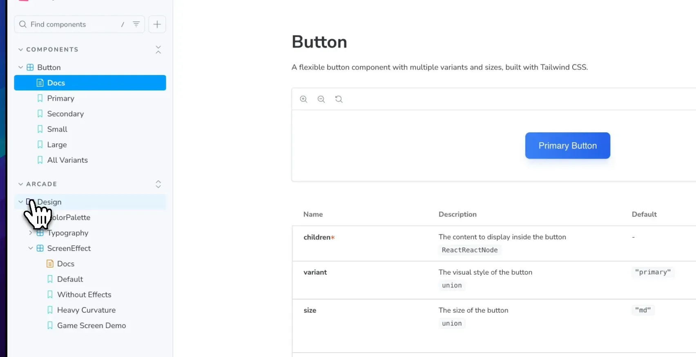